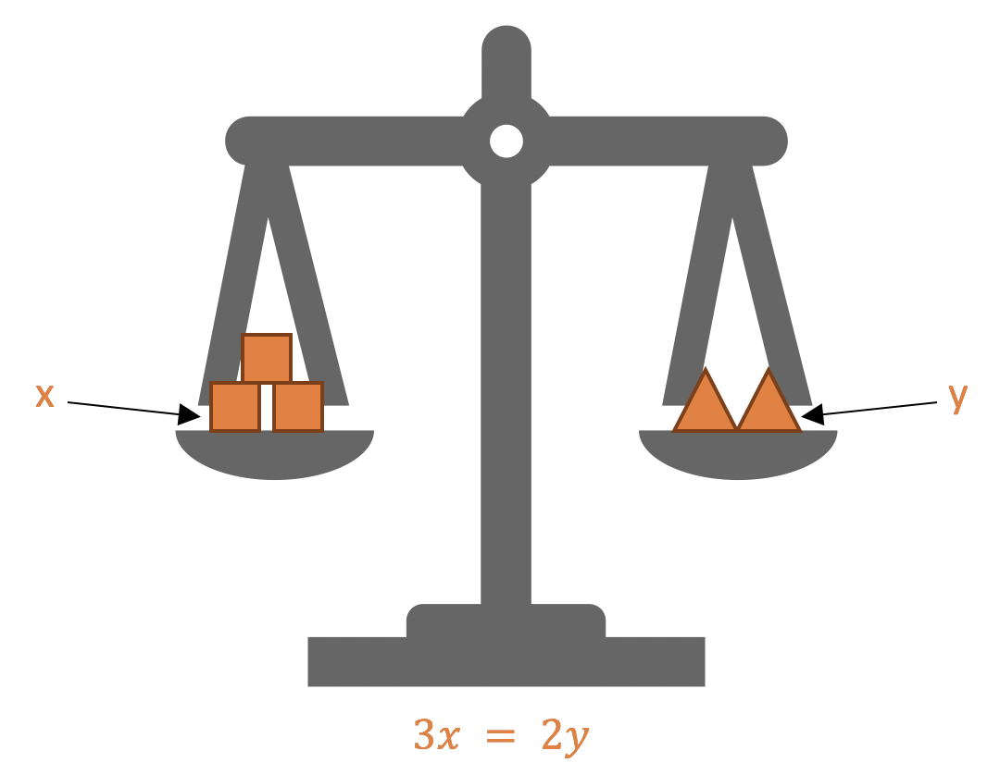
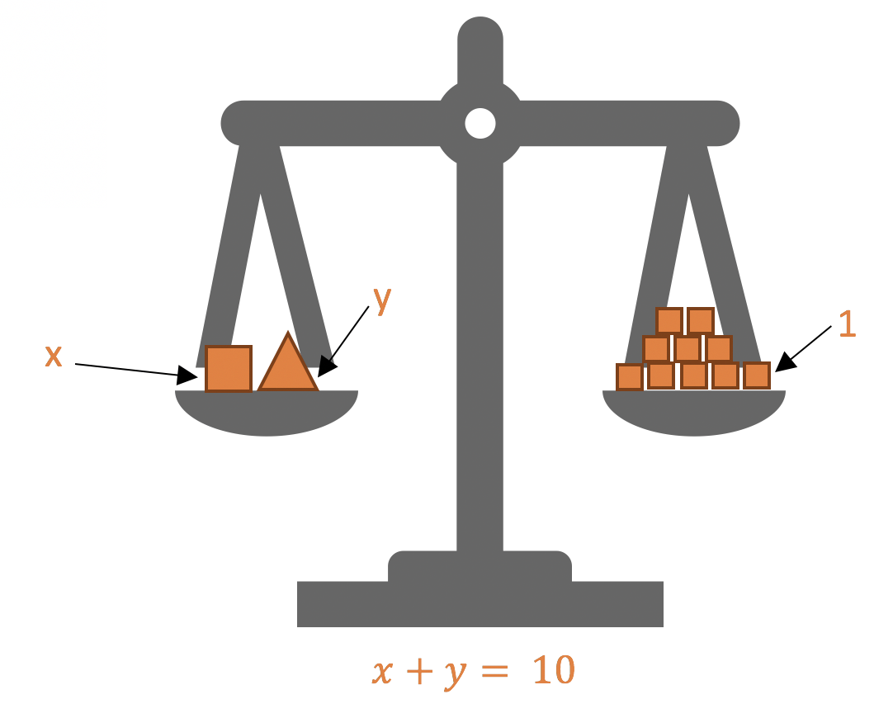
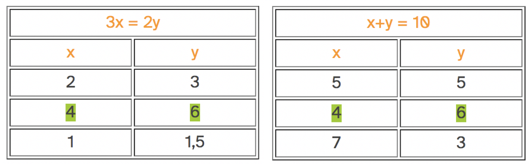

¿Y qué ocurre si en una ecuación aparece más de una incógnita?
Por ejemplo, imagina que en nuestra balanza aparecen dos tipos de pesos desconocidos: tres cuadrados en un plato y dos triángulos en el otro. Como, en principio, ambas figuras pueden tener pesos distintos, utilizaremos la letra x para referirnos al del cuadrado y la letra y para referirnos al del triángulo. Entonces equilibrar esta balanza correspondería a resolver la ecuación 3x=3y.

Para resolver esta ecuación hay que encontrar una pareja de valores, x e y, que garanticen que la balanza se mantenga en equilibrio. Podría ser, por ejemplo, que el cuadrado pesara 2 kg y el triángulo 3 kg. Pero también hay otras opciones: que el cuadrado pese 4 kg y el triángulo 6 kg, que el cuadrado pese 1 kg y el triángulo 1,5 kg, etc.
| 3x = 2y | |
| x | y |
| 2 | 3 |
| 4 | 6 |
| 1 | 1,5 |
| 6 | 9 |
Como ves, hay más de una solución; de hecho, hay infinitas. Eso no significa que las dos incógnitas puedan tomar dos valores cualesquiera: si el cuadrado vale 2 kg, el triángulo no puede valer 5 kg. Sin embargo, dado un valor de x, siempre podemos encontrar un valor correspondiente de y que haga que se cumpla la igualdad.
Ahora bien, si ese cuadrado y ese triángulo son objetos concretos, deben tener unos pesos bien definidos. Lo que ocurre es que una única balanza en equilibrio no nos proporciona suficiente información para determinar sus pesos de manera unívoca. La cosa cambia si una segunda balanza nos indica que el cuadrado y el triángulo pesas, conjuntamente, 10 kg. Eso se traduce en una nueva ecuación, formada por las dos incógnitas: x+y=10.

En este caso, también hay infinitas maneras de satisfacer la igualdad: que las dos figuras pesen 5 kg, que el cuadrado pese 4 kg y el triángulo 6 kg, que el cuadrado pese 7 kg y el triángulo 3 kg... Pero no todas ellas cumplen también la otra igualdad. Si queremos que ambas balanzas se mantengan en equilibrio, solo hay una opción: que el cuadrado pese 4 kg y que el triángulo pese 6 kg.

Cuando buscamos valores de incógnitas que satisfagan simultáneamente más de una ecuación, resolvemos un sistema de ecuaciones.